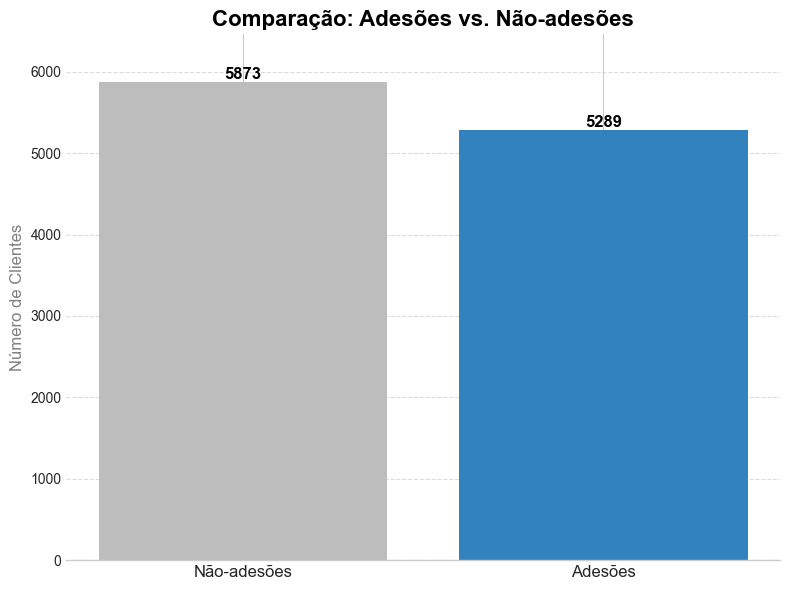
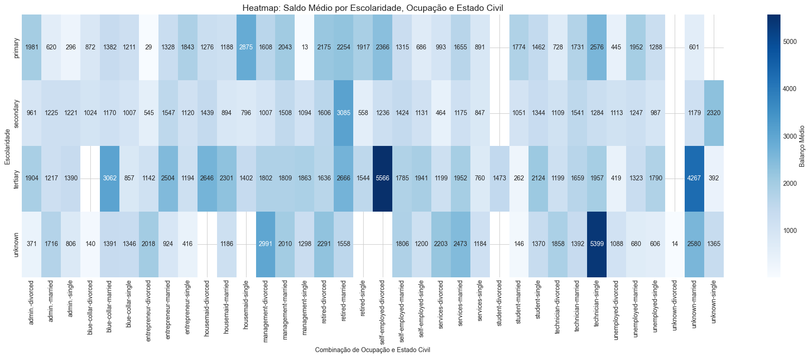
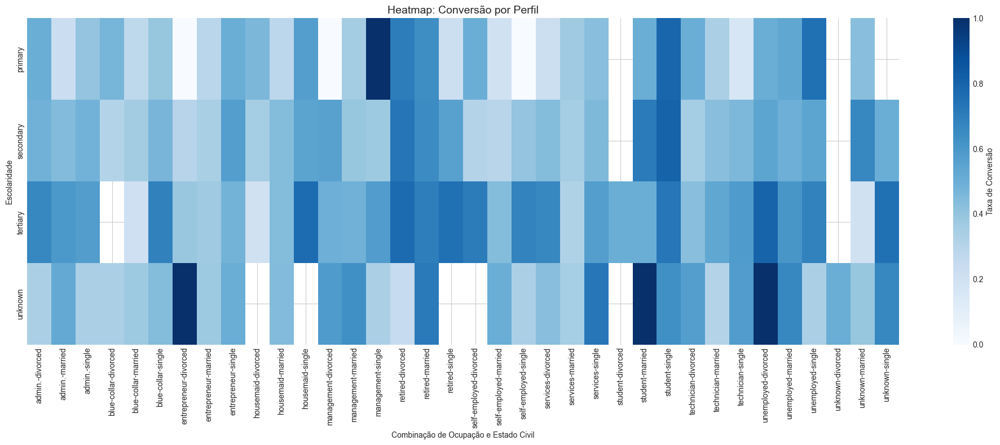
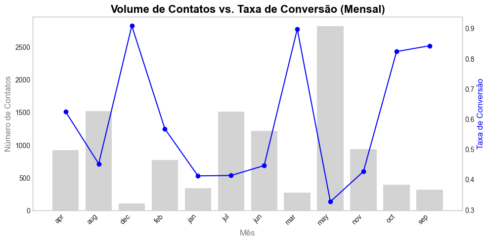

Meus Projetos

Análise de Campanha de Marketing Bancário
Análise exploratória completa de uma campanha de marketing para identificar padrões e otimizar estratégias.
Clique para ver detalhes

EM BREVE
EM BREVE.
Clique para ver detalhes

EM BREVE
EM BREVE.
Clique para ver detalhes
Análise de Campanha de Marketing Bancário
Visão Geral do Projeto
O Desafio

Gráfico 1: Comparação entre adesões e não-adesões da campanha
Base de Dados
11.162
Registros
Total de clientes na base
17
Variáveis
Características analisadas
0
Dados Nulos
Base completa e limpa
7 Variáveis Numéricas
Idade, saldo, duração do contato, etc.
10 Variáveis Categóricas
Ocupação, estado civil, educação, etc.
Principais Insights

Saldo Médio por Perfil

Taxa de Conversão por Perfil

Relação entre volume de contatos e taxa de conversão por mês
Resultados e Recomendações Estratégicas
Notebook com Código
analise_campanha_marketing.ipynb
Ver código completo
# %%
import pandas as pd
import numpy as np
import matplotlib.pyplot as plt
import seaborn as sns
# %%
# Configurações para melhorar a visualização dos gráficos
plt.style.use('seaborn-v0_8-whitegrid')
sns.set_palette("Blues_d")
# %%
# Carregamento da base de dados
# OBS: O caminho do arquivo foi mantido para referência, mas deve ser ajustado para o ambiente local
df = pd.read_csv(r'C:\Users\CalebSaldanha\OneDrive\Área de Trabalho\Modelos\Personalização Bancária\banking_ai_project\data\raw\bank_marketing_kaggle.csv')
# %%
# Verificação inicial do DataFrame
print("\nDimensões do DataFrame:")
print(df.shape)
# %%
print("\nInformações sobre as colunas:")
print(df.info())
# %%
print("\nVisualização das primeiras 5 linhas da base:")
df.head(5)
# %%
print("\nAnálise Descritiva dos Dados Numéricos:")
print(df.describe())
# %%
# Verificação de dados nulos e duplicados
print("\nVerificação de Dados Nulos:")
print(df.isnull().sum())
print("\nVerificação de Dados Duplicados:")
print(f"Dados duplicados: {df.duplicated().sum()}")
# %%
# Mapeamento de variáveis categóricas para numéricas para análises de correlação e agrupamento
df['deposit_numeric'] = df['deposit'].map({'yes': 1, 'no': 0})
df['housing_numeric'] = df['housing'].map({'yes': 1, 'no': 0})
df['loan_numeric'] = df['loan'].map({'yes': 1, 'no': 0})
# %%
print("\n--- 2. Análise Exploratória de Dados (EDA) ---")
# Gráfico: Distribuição de Idade
plt.figure(figsize=(10, 6))
sns.histplot(df['age'], bins=30, kde=False, color='#3182bd')
plt.title('Distribuição de Idade', fontsize=16, fontweight='bold', color='black')
plt.xlabel('Idade', fontsize=12, color='gray')
plt.ylabel('Contagem', fontsize=12, color='gray')
plt.grid(axis='y', linestyle='--', alpha=0.7)
plt.show()
# %%
# Gráfico: Distribuição de Balanço
plt.figure(figsize=(10, 6))
sns.histplot(df['balance'], bins=50, kde=False, color='#3182bd')
plt.title('Distribuição de Balanço', fontsize=16, fontweight='bold', color='black')
plt.xlabel('Balanço', fontsize=12, color='gray')
plt.ylabel('Contagem', fontsize=12, color='gray')
plt.grid(axis='y', linestyle='--', alpha=0.7)
plt.show()
# %%
# Gráfico: Distribuição por Ocupação
plt.figure(figsize=(12, 7))
job_counts = df['job'].value_counts()
sns.barplot(x=job_counts.index, y=job_counts.values, palette="Blues_d")
plt.title('Distribuição por Ocupação', fontsize=16, fontweight='bold', color='black')
plt.xlabel('Ocupação', fontsize=12, color='gray')
plt.ylabel('Contagem', fontsize=12, color='gray')
plt.xticks(rotation=45, ha='right')
for index, value in enumerate(job_counts.values):
plt.text(index, value, f'{value}', ha='center', va='bottom', fontsize=10, color='black')
plt.show()
# %%
# Gráfico: Distribuição por Estado Civil
plt.figure(figsize=(8, 6))
marital_counts = df['marital'].value_counts()
sns.barplot(x=marital_counts.index, y=marital_counts.values, palette="Blues_d")
plt.title('Distribuição por Estado Civil', fontsize=16, fontweight='bold', color='black')
plt.xlabel('Estado Civil', fontsize=12, color='gray')
plt.ylabel('Contagem', fontsize=12, color='gray')
for index, value in enumerate(marital_counts.values):
plt.text(index, value, f'{value}', ha='center', va='bottom', fontsize=10, color='black')
plt.show()
# %%
print("\n--- 3. Análises Multivariadas (Heatmaps) ---")
# Gráfico: Heatmap de Saldo Médio por Perfil
grouped_balance = df.groupby(['education', 'job', 'marital'])['balance'].mean().reset_index()
pivot_balance = grouped_balance.pivot_table(values='balance', index='education', columns=['job', 'marital'])
plt.figure(figsize=(20, 8))
sns.heatmap(pivot_balance, cmap="Blues", annot=True, fmt=".0f", cbar_kws={'label': 'Balanço Médio'})
plt.title("Heatmap: Saldo Médio por Escolaridade, Ocupação e Estado Civil", fontsize=14)
plt.ylabel("Escolaridade")
plt.xlabel("Combinação de Ocupação e Estado Civil")
plt.show()
# %%
# Gráfico: Heatmap de Taxa de Conversão por Perfil
grouped_deposit = df.groupby(['education', 'job', 'marital'])['deposit_numeric'].mean().reset_index()
pivot_deposit = grouped_deposit.pivot_table(values='deposit_numeric', index='education', columns=['job', 'marital'])
plt.figure(figsize=(20, 8))
sns.heatmap(pivot_deposit, cmap="Blues", annot=False, cbar_kws={'label': 'Taxa de Conversão'})
plt.title("Heatmap: Taxa de Conversão por Perfil", fontsize=14)
plt.ylabel("Escolaridade")
plt.xlabel("Combinação de Ocupação e Estado Civil")
plt.show()
# %%
print("\n--- 4. Análise de Desempenho da Campanha ---")
# Gráfico: Volume de Contatos vs. Taxa de Conversão (Mensal)
df['month_period'] = df['month'].astype(str)
contacts_count = df['month_period'].value_counts().sort_index()
conversion_rate = df.groupby('month_period')['deposit_numeric'].mean().sort_index()
fig, ax1 = plt.subplots(figsize=(12, 6))
ax2 = ax1.twinx()
ax1.bar(contacts_count.index, contacts_count.values, color='lightgray', label='Número de Contatos')
ax2.plot(conversion_rate.index, conversion_rate.values, color='blue', marker='o', label='Taxa de Conversão')
ax1.set_xlabel('Mês', fontsize=12, color='gray')
ax1.set_ylabel('Número de Contatos', fontsize=12, color='gray')
ax2.set_ylabel('Taxa de Conversão', fontsize=12, color='blue')
plt.title('Volume de Contatos vs. Taxa de Conversão (Mensal)', fontsize=16, fontweight='bold', color='black')
ax1.set_xticklabels(ax1.get_xticklabels(), rotation=45, ha='right')
ax1.grid(False)
ax2.grid(False)
plt.show()
# %%
# Gráfico: Tempo de Contato vs. Conversão
duration_bins = [0, 60, 180, 300, 600, 900, 1200, 1800, 2400, 3600]
df['duration_bins'] = pd.cut(df['duration'], bins=duration_bins, right=False)
duration_conversion = df.groupby('duration_bins')['deposit_numeric'].mean()
plt.figure(figsize=(10, 6))
sns.barplot(x=duration_conversion.index.astype(str), y=duration_conversion.values, palette="Blues_d")
plt.title('Tempo de Contato vs. Conversão', fontsize=16, fontweight='bold', color='black')
plt.xlabel('Duração (segundos)', fontsize=12, color='gray')
plt.ylabel('Taxa de Conversão', fontsize=12, color='gray')
plt.xticks(rotation=45, ha='right')
plt.show()
# %%
# Gráfico: Nº de Contatos vs. Taxa de Sucesso
campaign_conversion = df.groupby('campaign')['deposit_numeric'].mean()
plt.figure(figsize=(12, 6))
sns.barplot(x=campaign_conversion.index, y=campaign_conversion.values, palette="Blues_d")
plt.title('Nº de Contatos vs. Taxa de Sucesso', fontsize=16, fontweight='bold', color='black')
plt.xlabel('Número de Contatos na Campanha', fontsize=12, color='gray')
plt.ylabel('Taxa de Conversão', fontsize=12, color='gray')
plt.xticks(rotation=45, ha='right')
plt.show()
# %%
# Gráfico: Histórico Passado vs. Conversão Atual
poutcome_conversion = df.groupby('poutcome')['deposit_numeric'].mean().sort_values(ascending=False)
plt.figure(figsize=(8, 6))
sns.barplot(x=poutcome_conversion.index, y=poutcome_conversion.values, palette="Blues_d")
plt.title('Histórico Passado vs. Conversão Atual', fontsize=16, fontweight='bold', color='black')
plt.xlabel('Resultado da Campanha Anterior', fontsize=12, color='gray')
plt.ylabel('Taxa de Conversão', fontsize=12, color='gray')
plt.xticks(rotation=45, ha='right')
plt.show()
```Em breve
Detalhes do projeto serão adicionados em breve.
Sistema de Recomendação com Deep Learning
Detalhes do projeto de sistema de recomendação serão adicionados em breve.